Learning Objectives After completing this chapter, you should be able to:
Derive and sketch the step response of first-order systems, identifying gain \(K\) and time constant \(\tau\)
Compute rise time and settling time for first-order systems from \(\tau\)
Classify second-order systems by damping ratio: underdamped, critically damped, overdamped
Compute \(\omega_n\), \(\zeta\), \(\omega_d\), peak time, percentage overshoot, rise time, and settling time for underdamped second-order systems
Relate pole locations on the \(s\)-plane to transient response characteristics
Determine steady-state error for step, ramp, and parabolic inputs using the final value theorem and system type
A stable control system must also respond in a predictable, satisfactory way. By studying how outputs evolve after standard test inputs, we quantify performance: speed of response, overshoot, oscillation, and settling behaviour. This chapter focuses primarily on the step response, which reveals the transient characteristics most important for control design.
first order systems arise in thermal processes, liquid-level systems, RC circuits, and low-pass filtering.
A linear time-invariant first-order system can be written in the differential-equation form \[\begin{equation} \tau \frac{dy(t)}{dt} + y(t) = K\,u(t), \label{eq:first_order_ode} \end{equation}\] where
\(u(t)\) is the input,
\(y(t)\) is the output,
\(K\) is the steady-state gain,
\(\tau>0\) is the time constant.
Taking the Laplace transform of [eq:first_order_ode] under zero initial conditions gives \[\tau sY(s)+Y(s)=KU(s),\] hence the transfer function is \[\begin{equation} G(s)=\frac{Y(s)}{U(s)}=\frac{K}{\tau s+1}. \label{eq:first_order_tf} \end{equation}\]
Many physical systems have one dominant storage mechanism (e.g. thermal energy in a heated body, charge in a capacitor), and a first-order model often captures the main transient behaviour well, even as a first approximation for higher-order systems.
To understand the meaning of the time constant, consider the response of [eq:first_order_tf] to a step input of magnitude \(A\), namely \[u(t)=A\,u_0(t)\]
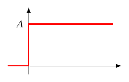
where \(u_0(t)\) denotes the unit step.
The Laplace transform of the input is \[U(s)=\frac{A}{s}.\] Therefore, \[Y(s)=G(s)U(s)=\frac{K}{\tau s+1}\cdot \frac{A}{s} = \frac{KA}{s(\tau s+1)}.\]
Using partial fractions, \[\frac{KA}{s(\tau s+1)} = \frac{KA}{s}-\frac{KA\tau}{\tau s+1}.\] Since \[\frac{1}{\tau s+1}=\frac{1}{\tau}\frac{1}{s+\frac{1}{\tau}},\] the inverse Laplace transform gives \[\begin{equation} y(t)=KA\left(1-e^{-t/\tau}\right)u_0(t). \label{eq:first_order_step_response} \end{equation}\]
Thus the response starts from zero and approaches \(KA\). The quantity \(K\) sets the final value for a unit input, while \(\tau\) controls how quickly the exponential term decays.
Evaluate [eq:first_order_step_response] at \(t=\tau\): \[y(\tau)=KA\left(1-e^{-1}\right).\] Since \[e^{-1}\approx 0.3679,\] we obtain \[\begin{equation} y(\tau)\approx 0.632\,KA. \label{eq:63percent} \end{equation}\]
The time constant \(\tau\) of a first-order system is the time required for the step response to complete approximately \(63.2\%\) of its total change from the initial value to the final value. For a zero-initial-condition response, this is the same as reaching \(63.2\%\) of the final value.
A small \(\tau\) means the output reaches its final value quickly; a large \(\tau\) means it takes longer.
How to estimate \(\tau\) from a response plot If the step response of a first-order system is known experimentally, the time constant can be estimated by:
determining the initial value \(y_0\) and final value \(y(\infty)\),
computing the output change \(\Delta y=y(\infty)-y_0\),
finding the time at which \(y(t)=y_0+0.632\,\Delta y\).
If the response has no delay, that time is the estimated time constant \(\tau\). If the response has a visible delay \(\theta\), then the time constant is measured from the end of the delay, not from the instant at which the input was changed.
A process is initially at steady state with input \(u_0=2\) and output \(y_0=1\). At \(t=0\), the input is changed to \(u_1=5\). The following stored data are obtained from the output response.
| Time \(t\) (s) | Input \(u(t)\) | Output \(y(t)\) |
|---|---|---|
| \(-0.5\) | 2 | 1.000 |
| 0.0 | 5 | 1.000 |
| 0.5 | 5 | 1.000 |
| 1.0 | 5 | 1.000 |
| 1.5 | 5 | 2.327 |
| 2.0 | 5 | 3.361 |
| 2.5 | 5 | 4.166 |
| 3.0 | 5 | 4.793 |
| 4.0 | 5 | 5.661 |
| 5.0 | 5 | 6.188 |
| 6.0 | 5 | 6.507 |
| 8.0 | 5 | 6.819 |
| 10.0 | 5 | 6.933 |
The response plot is shown below. The dashed horizontal line marks the \(63.2\%\) point of the output change. Obtain the mathematical model of the process as a first-order system with time delay, and write the time-domain response for this particular step test.
The input step size is \[\Delta u = u_1-u_0 = 5-2 = 3.\] The output starts at \(y_0=1\) and settles close to \[y(\infty)\approx 7.\] Hence the output change is \[\Delta y = y(\infty)-y_0 = 7-1 = 6.\] The steady-state gain is therefore \[K=\frac{\Delta y}{\Delta u}=\frac{6}{3}=2.\]
From the data, the output does not begin to change until approximately \(t=1~\text{s}\). Thus the process delay is estimated as \[\theta \approx 1~\text{s}.\]
The \(63.2\%\) point must be computed from the output change, not from zero: \[y_{63}=y_0+0.632\,\Delta y =1+0.632(6) =4.792.\] From the stored data, \(y(t)\approx 4.792\) at \(t=3~\text{s}\). Since the response starts after the delay, \[\tau = 3-1 = 2~\text{s}.\]
The identified first-order plus time-delay model is therefore \[G(s)=\frac{\Delta Y(s)}{\Delta U(s)} \approx \frac{2e^{-s}}{2s+1}.\] In time-domain form, for this particular step test, \[y(t)= \begin{cases} 1, & 0\leq t<1,\\[2mm] 1+6\left(1-e^{-(t-1)/2}\right), & t\geq 1. \end{cases}\]
Two additional measures of response speed are commonly used.
The rise time is the time required for the response to rise from a lower percentage to a higher percentage of its final value.
For first-order systems, rise time is commonly defined as the time taken to go from \(10\%\) to \(90\%\) of the final value.
Let \(t_{10}\) denote the time at which the response reaches \(10\%\) of the final value, and \(t_{90}\) the time at which it reaches \(90\%\).
From \[\frac{y(t)}{KA}=1-e^{-t/\tau},\] for \(10\%\) of final value, \[0.1=1-e^{-t_{10}/\tau} \quad \Rightarrow \quad e^{-t_{10}/\tau}=0.9 \quad \Rightarrow \quad t_{10}=-\tau \ln(0.9).\] Similarly, for \(90\%\) of final value, \[0.9=1-e^{-t_{90}/\tau} \quad \Rightarrow \quad e^{-t_{90}/\tau}=0.1 \quad \Rightarrow \quad t_{90}=-\tau \ln(0.1).\] Hence the rise time is \[\begin{align} t_r &= t_{90}-t_{10} \nonumber\\ &= -\tau \ln(0.1)+\tau \ln(0.9) \nonumber\\ &= \tau \ln\!\left(\frac{0.9}{0.1}\right) = \tau \ln 9. \end{align}\] Numerically, \[\begin{equation} t_r \approx 2.2\tau. \label{eq:rise_time_first_order} \end{equation}\]
For the \(10\%\)–\(90\%\) convention, the result is therefore \(t_r=\tau\ln 9\approx 2.2\tau\). Other conventions exist, so any quoted rise time should be interpreted together with the percentage levels used to define it.
The settling time is the time required for the response to enter and remain within a specified band around the final value.
Common engineering definitions use either the \(\pm 2\%\) band or the \(\pm 5\%\) band.
For a first-order system, the error from final value is \[e(t)=KA-y(t)=KAe^{-t/\tau}.\]
For the \(2\%\) settling-time criterion, \[\frac{|e(t_s)|}{|KA|}\le 0.02 \quad \Rightarrow \quad e^{-t_s/\tau}\le 0.02.\] Therefore, \[t_s \ge -\tau \ln(0.02).\] Numerically, \[\begin{equation} t_s \approx 3.9\tau \approx 4\tau. \label{eq:settling_time_2percent} \end{equation}\]
For the \(5\%\) settling-time criterion, \[e^{-t_s/\tau}\le 0.05 \quad \Rightarrow \quad t_s \ge -\tau\ln(0.05),\] hence \[\begin{equation} t_s \approx 3\tau. \label{eq:settling_time_5percent} \end{equation}\]
For a stable first-order system with \(\tau>0\), the step response is monotonic. It does not oscillate, it does not overshoot, and it has no peak time in the sense used for underdamped second-order systems. The useful rules of thumb are \[t_r \approx 2.2\tau \quad \text{(10\%--90\% rise time)},\qquad t_s \approx 4\tau \quad \text{(2\% settling)},\qquad t_s \approx 3\tau \quad \text{(5\% settling)}.\]
The step response \[y(t)=KA\left(1-e^{-t/\tau}\right)\] starts at zero, rises rapidly at first, and then gradually approaches the final value \(KA\). The slope is largest at the beginning because the output is still far from its final value. As the output gets closer to \(KA\), the remaining error \(KA-y(t)\) becomes smaller, so the curve flattens. Figure 1.1 marks the most commonly used time-domain measurements: one time constant, the \(10\%\)–\(90\%\) rise time, and the \(2\%\) settling time.
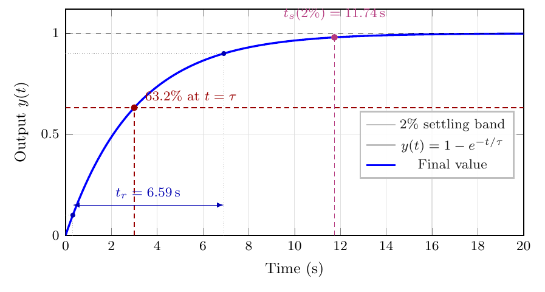
The transfer function of a standard first-order system is \[G(s)=\frac{K}{\tau s+1}.\] The pole is obtained by setting the denominator equal to zero: \[\tau s+1=0 \qquad \Rightarrow \qquad s=-\frac{1}{\tau}.\]
Therefore, a first-order system has a single pole, and its location is determined entirely by the time constant \(\tau\). This simple relation is important because it connects the algebraic form of the transfer function with both stability and response speed.
For a standard first-order system, the time constant is defined with \(\tau>0\), so the pole \[s=-\frac{1}{\tau}\] lies in the left-half plane and the system is stable. More generally, any first-order transfer function with a pole in the right-half plane is unstable, because its response grows with time.
Since the pole is located at \[s=-\frac{1}{\tau},\] large values of \(\tau\) place the pole close to the origin, while small values of \(\tau\) move the pole further to the left. This agrees with the time-domain result: a smaller time constant produces a faster response. Conversely, as \(\tau\) becomes larger, the pole approaches the origin and the response becomes slower.
Geometric meaning on the \(s\)-plane For first-order systems, the distance of the pole from the origin along the negative real axis gives a direct indication of the speed of response:
poles far to the left correspond to fast responses,
poles near the origin correspond to slow responses.
For example, consider several values of \(\tau\): \[\tau=4,\qquad \tau=2,\qquad \tau=1,\qquad \tau=0.5.\] The corresponding poles are \[s=-\frac{1}{4}=-0.25,\qquad s=-\frac{1}{2}=-0.5,\qquad s=-1,\qquad s=-2.\]
These poles all lie on the negative real axis, but the one corresponding to \(\tau=0.5\) is furthest to the left. Hence that system is the fastest among them.
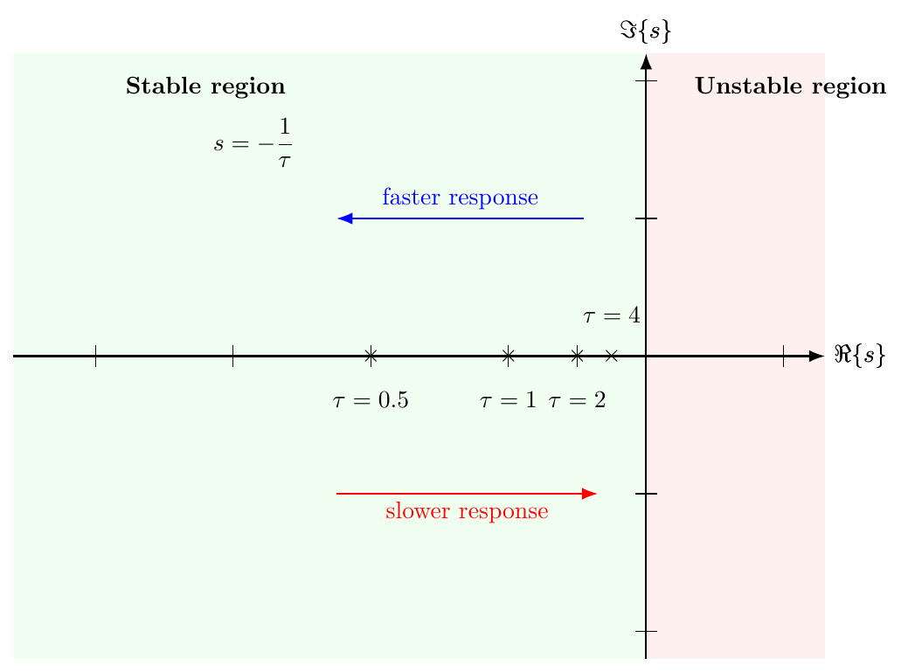
Consider the following first-order transfer functions: \[G_1(s)=\frac{1}{4s+1},\qquad G_2(s)=\frac{1}{2s+1},\qquad G_3(s)=\frac{1}{s+1},\qquad G_4(s)=\frac{1}{0.5s+1}.\] Determine the poles and compare the speed of response.
The poles are found from the denominators: \[4s+1=0 \Rightarrow s=-0.25,\] \[2s+1=0 \Rightarrow s=-0.5,\] \[s+1=0 \Rightarrow s=-1,\] \[0.5s+1=0 \Rightarrow s=-2.\]
Thus the poles are: \[-0.25,\quad -0.5,\quad -1,\quad -2.\]
All poles are in the left-half plane, so all four systems are stable.
Since the pole at \(-2\) is furthest to the left, the system \[G_4(s)=\frac{1}{0.5s+1}\] has the fastest response.
Since the pole at \(-0.25\) is closest to the origin, the system \[G_1(s)=\frac{1}{4s+1}\] has the slowest response.
Consider the system \[G(s)=\frac{5}{2s+1}.\] Find the response to a unit-step input and determine:
the final value,
the time constant,
the approximate rise time,
the approximate settling time using the \(2\%\) criterion.
Comparing \[G(s)=\frac{5}{2s+1}\] with the standard form \[G(s)=\frac{K}{\tau s+1},\] we identify \[K=5, \qquad \tau=2.\]
For a unit-step input, \[U(s)=\frac{1}{s}.\] Hence \[Y(s)=\frac{5}{2s+1}\cdot \frac{1}{s} = \frac{5}{s(2s+1)}.\] The time-domain response is \[y(t)=5\left(1-e^{-t/2}\right), \qquad t\ge 0.\]
Therefore:
The final value is \[y(\infty)=5.\]
The time constant is \[\tau=2~\text{s}.\]
The rise time is approximately \[t_r\approx 2.2\tau = 2.2(2)=4.4~\text{s}.\]
The \(2\%\) settling time is approximately \[t_s\approx 4\tau=4(2)=8~\text{s}.\]
A first-order system has a unit-step response with final value equal to \(10\). From an experimental plot, the output reaches \(6.32\) at \(t=1.8~\text{s}\). Determine the time constant and estimate the \(2\%\) settling time.
Since \[6.32 = 0.632 \times 10,\] the given output corresponds to \(63.2\%\) of the final value. Therefore, by definition of the time constant, \[\tau = 1.8~\text{s}.\]
The \(2\%\) settling time is approximately \[t_s \approx 4\tau = 4(1.8)=7.2~\text{s}.\]
Hence, \[\boxed{\tau=1.8~\text{s}}, \qquad \boxed{t_s\approx 7.2~\text{s}}.\]
Consider the first-order system \[G(s)=\frac{3}{4s+1}.\] Find the response to an input step of magnitude \(2\).
Here, \[K=3, \qquad \tau=4, \qquad A=2.\]
The general step-response formula is \[y(t)=KA\left(1-e^{-t/\tau}\right).\] Substituting the values gives \[y(t)=3\times 2\left(1-e^{-t/4}\right) =6\left(1-e^{-t/4}\right), \qquad t\ge 0.\]
The final value is \[y(\infty)=6.\] At \(t=\tau=4~\text{s}\), \[y(4)=6\left(1-e^{-1}\right)\approx 3.79.\] So after \(4\) seconds the response has reached approximately \(63.2\%\) of the final value.
A system has the unit-step response \[y(t)=8\left(1-e^{-t/5}\right), \qquad t\ge 0.\] Find:
the steady-state gain,
the time constant,
the transfer function.
The standard unit-step response of a first-order system is \[y(t)=K\left(1-e^{-t/\tau}\right).\] Comparing with \[y(t)=8\left(1-e^{-t/5}\right),\] we identify \[K=8, \qquad \tau=5.\]
Therefore:
The steady-state gain is \[K=8.\]
The time constant is \[\tau=5~\text{s}.\]
The transfer function is \[G(s)=\frac{K}{\tau s+1} =\frac{8}{5s+1}.\]
Mechanical vibration systems, RLC circuits, servo mechanisms, and many closed-loop control systems require a second-order model. Such systems can exhibit oscillation, overshoot, and varying degrees of damping.
The transient-specification formulae below are exact for the standard second-order model. For higher-order systems, they serve as approximations based on dominant poles.
A general linear time-invariant second order may be written as \[\begin{equation} a_2 \ddot y(t) + a_1 \dot y(t) + a_0 y(t) = b_0 u(t), \label{eq:general_second_order_ode} \end{equation}\] where \(a_2>0\), \(a_1\), \(a_0\), and \(b_0\) are constants.
Under zero initial conditions, the transfer function becomes \[G(s)=\frac{Y(s)}{U(s)}=\frac{b_0}{a_2 s^2+a_1 s+a_0}.\]
In control engineering, it is customary to express a second-order system in the standard form \[\begin{equation} G(s)=\frac{K\omega_n^2}{s^2+2\zeta\omega_n s+\omega_n^2}, \label{eq:standard_second_order_tf} \end{equation}\] where:
\(K\) is the steady-state gain,
\(\omega_n\) is the undamped natural freq,
\(\zeta\) is the damping ratio.
\(\omega_n\), measured in radians per second, is the frequency at which the system would oscillate if no damping were present. The damping ratio \(\zeta\) is dimensionless and describes how strongly the transient oscillation is suppressed. Small \(\zeta\) gives a lightly damped, oscillatory response; larger \(\zeta\) produces less overshoot and eventually removes oscillation altogether.
For an underdamped second-order system \((0<\zeta<1)\), the oscillation occurs at the damped freq \[\begin{equation} \omega_d=\omega_n\sqrt{1-\zeta^2}, \label{eq:damped_natural_frequency} \end{equation}\] measured in radians per second.
The symbol \(\omega_n\) is often called simply the natural frequency, but in the underdamped case the visible oscillation occurs at \(\omega_d\), not at \(\omega_n\). Damping reduces the oscillation frequency because \(\omega_d=\omega_n\sqrt{1-\zeta^2}<\omega_n\) when \(0<\zeta<1\).
The poles of [eq:standard_second_order_tf] are the roots of \[s^2+2\zeta\omega_n s+\omega_n^2=0.\] Using the quadratic formula, \[\begin{equation} s=-\zeta\omega_n \pm \omega_n\sqrt{\zeta^2-1}. \label{eq:second_order_poles_general} \end{equation}\]
The parameter \(\zeta\) mainly determines the shape of the transient response, while \(\omega_n\) scales it in time.
If \(\zeta=0\), then \[G(s)=\frac{K\omega_n^2}{s^2+\omega_n^2},\] and the poles are \[s=\pm j\omega_n.\] The poles lie on the imaginary axis and the system oscillates indefinitely. An undamped second-order system does not settle to its final value in the usual transient-response sense. Instead, it exhibits sustained oscillation. Figure 1.3 shows the step response of the undamped second-order system, which continuously oscillates about the final value of the step response.
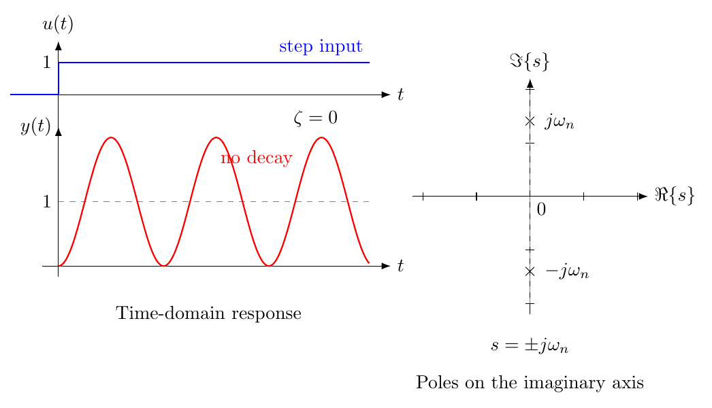
If \(0<\zeta<1\), then \[s=-\zeta\omega_n \pm j\omega_n\sqrt{1-\zeta^2} = -\zeta\omega_n \pm j\omega_d.\] The poles are complex conjugates in the left-half plane. The response is oscillatory, but the oscillations decay with time. Figure 1.4 shows the unit-step response of an underdamped second-order system and the corresponding pole locations on the \(s\)-plane.
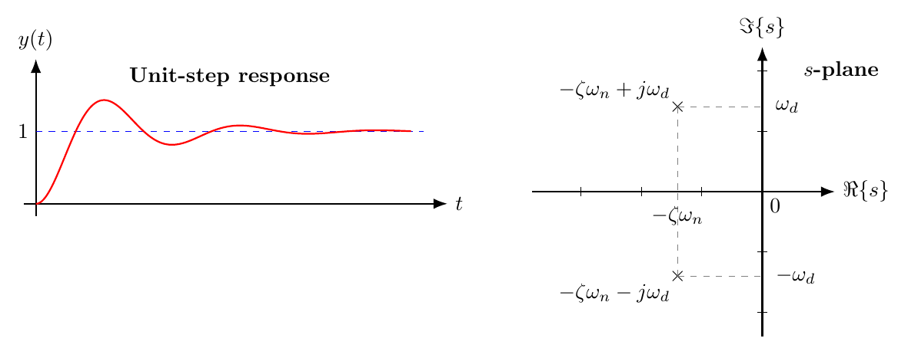
If \(\zeta=1\), then the characteristic equation has a repeated real root at \[s=-\omega_n.\] Thus, both poles coincide on the negative real axis. The response is non-oscillatory and, among the standard second-order cases, gives the fastest approach to the steady-state value without overshoot. Figure 1.5 illustrates the corresponding unit-step response and pole locations.
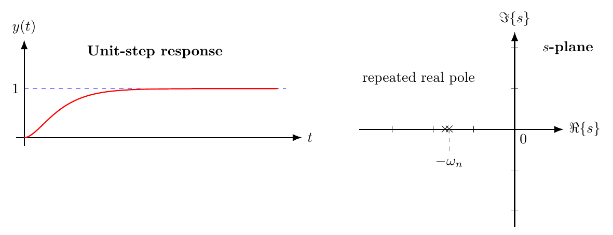
If \(\zeta>1\), then the characteristic equation has two distinct real negative roots. More explicitly, the poles are \[p_{1,2}=-\omega_n\left(\zeta \mp \sqrt{\zeta^2-1}\right), \qquad \zeta>1.\] Hence, the poles lie at separate locations on the negative real axis. The response is non-oscillatory because there is no imaginary part, but it is usually slower than the critically damped response because the slower real pole dominates the tail of the transient. Figure 1.6 shows the unit-step response and the corresponding pole locations.
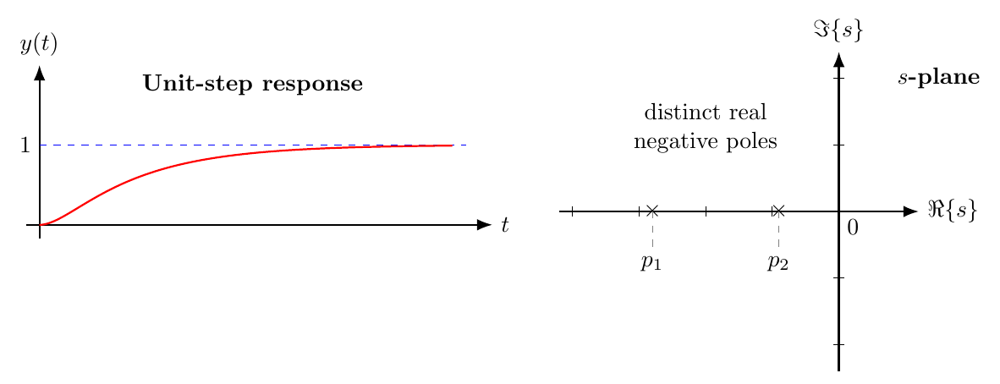
Within the standard second-order form with \(\omega_n>0\), a negative damping ratio gives poles with positive real part, so the response grows with time and the system is unstable.
Changing \(\zeta\) moves the poles through a sequence of qualitatively different cases. At \(\zeta=0\), the poles lie on the imaginary axis and the response does not decay. For \(0<\zeta<1\), the poles are complex conjugates in the left-half plane and the response oscillates with decaying amplitude. At \(\zeta=1\), the poles meet as a repeated real pole. For \(\zeta>1\), they split into two distinct negative real poles and the response remains non-oscillatory.
Consider the unit-step input \[u(t)=u_0(t), \qquad U(s)=\frac{1}{s}.\] For the system [eq:standard_second_order_tf], \[Y(s)=\frac{K\omega_n^2}{s\left(s^2+2\zeta\omega_n s+\omega_n^2\right)}.\]
The exact time-domain expression depends on \(\zeta\), but the final value is simple: for a stable standard second-order system and a unit-step input, \(y(\infty)=K\).
When \(\zeta=0\), the standard second-order transfer function \[G(s)=\frac{K\omega_n^2}{s^2+2\zeta\omega_n s+\omega_n^2}\] reduces to \[\begin{equation} G(s)=\frac{K\omega_n^2}{s^2+\omega_n^2}. \label{eq:undamped_second_order_tf} \end{equation}\]
For a unit-step input, \[U(s)=\frac{1}{s},\] so the output in the Laplace domain is \[Y(s)=G(s)U(s) =\frac{K\omega_n^2}{s(s^2+\omega_n^2)}.\]
Using partial fractions, write \[\frac{K\omega_n^2}{s(s^2+\omega_n^2)} = \frac{A}{s}+\frac{Bs+C}{s^2+\omega_n^2}.\] Multiplying through by \(s(s^2+\omega_n^2)\) gives \[K\omega_n^2=A(s^2+\omega_n^2)+(Bs+C)s.\] Expanding, \[K\omega_n^2=(A+B)s^2+Cs+A\omega_n^2.\] Equating coefficients yields \[A+B=0,\qquad C=0,\qquad A\omega_n^2=K\omega_n^2.\] Hence \[A=K,\qquad B=-K,\qquad C=0.\] Therefore, \[Y(s)=\frac{K}{s}-\frac{Ks}{s^2+\omega_n^2}.\]
Taking the inverse Laplace transform, \[\begin{equation} y(t)=K\left(1-\cos \omega_n t\right), \qquad t\ge 0. \label{eq:undamped_step_response} \end{equation}\]
This response oscillates indefinitely because there is no damping term to dissipate energy. For a unit-step input, the output oscillates about the level \(K\), but it never settles to that value.
This is the most important case in control applications. The unit-step response is \[\begin{equation} y(t)=K\left[1-e^{-\zeta\omega_n t} \left( \cos(\omega_d t) +\frac{\zeta}{\sqrt{1-\zeta^2}}\sin(\omega_d t) \right)\right], \qquad t\ge 0, \label{eq:step_response_underdamped} \end{equation}\] where \[\omega_d=\omega_n\sqrt{1-\zeta^2}.\]
An equivalent form is \[\begin{equation} y(t)=K\left[1-\frac{e^{-\zeta\omega_n t}}{\sqrt{1-\zeta^2}} \sin(\omega_d t+\phi)\right], \qquad \phi=\arccos(\zeta). \label{eq:step_response_underdamped_alt} \end{equation}\]
The expression has two parts: an oscillatory term at frequency \(\omega_d\), and an exponential envelope \(e^{-\zeta\omega_n t}\) that gradually removes the oscillation. This is why the response can overshoot and still settle to \(K\) in the long run.
For \(\zeta=1\), the unit-step response is \[\begin{equation} y(t)=K\left[1-e^{-\omega_n t}(1+\omega_n t)\right], \qquad t\ge 0. \label{eq:step_response_critical} \end{equation}\]
For \(\zeta>1\), the poles are real and distinct: \(p_{1,2} = -\zeta\omega_n \pm \omega_n\sqrt{\zeta^2-1}\). The unit-step response is a sum of two decaying exponentials: \[\begin{equation} y(t)=K\left[1-c_1 e^{p_1 t}-c_2 e^{p_2 t}\right], \qquad t\ge 0, \label{eq:step_response_overdamped} \end{equation}\] where the constants are \[c_1 = \frac{p_2}{p_2 - p_1}, \qquad c_2 = \frac{-p_1}{p_2 - p_1}.\] The response is non-oscillatory. The pole closer to the imaginary axis (the “slow” pole) dominates the settling behaviour.
The most widely used transient-response formulae for overshoot, peak time, rise time, and settling time are normally stated for the underdamped case \(0<\zeta<1\), because that is the case in which these quantities are most informative.
For underdamped second-order systems, the following quantities are especially important.
The peak time is the time taken for the response to reach its first maximum value. It is given by \[\begin{equation} t_p=\frac{\pi}{\omega_d} =\frac{\pi}{\omega_n\sqrt{1-\zeta^2}}. \label{eq:peak_time} \end{equation}\]
The overshoot is the amount by which the response exceeds the final value, expressed as a percentage. For an underdamped second-order system \((0<\zeta<1)\), it is given by \[\begin{equation} \%OS = 100\,e^{-\frac{\zeta\pi}{\sqrt{1-\zeta^2}}}. \label{eq:percent_overshoot} \end{equation}\]
This expression shows that the overshoot depends only on the damping ratio \(\zeta\). In particular, it decreases monotonically as \(\zeta\) increases, as shown in Figure 1.7.
In design problems, however, the situation is often reversed. A designer may begin with a transient-response specification such as \[\%OS \leq 10\%\] or \[\%OS \leq 5\%,\] and must then determine the damping ratio required to satisfy that specification. Rearranging [eq:percent_overshoot] gives the corresponding formula for \(\zeta\).
Let \[M_p=\frac{\%OS}{100}.\] Then \[M_p=e^{-\frac{\zeta\pi}{\sqrt{1-\zeta^2}}}.\] Taking natural logarithms, \[\ln(M_p)=-\frac{\zeta\pi}{\sqrt{1-\zeta^2}}.\] Solving for \(\zeta\) yields \[\begin{equation} \zeta = \frac{-\ln\!\left(\frac{\%OS}{100}\right)} {\sqrt{\pi^2+\left[\ln\!\left(\frac{\%OS}{100}\right)\right]^2}}. \label{eq:zeta_from_percent_overshoot} \end{equation}\]
The formula \[\%OS = 100\,e^{-\frac{\zeta\pi}{\sqrt{1-\zeta^2}}}\] is mainly used for analysis, whereas \[\zeta = \frac{-\ln\!\left(\frac{\%OS}{100}\right)} {\sqrt{\pi^2+\left[\ln\!\left(\frac{\%OS}{100}\right)\right]^2}}\] is especially useful for design, when the overshoot specification is known in advance.
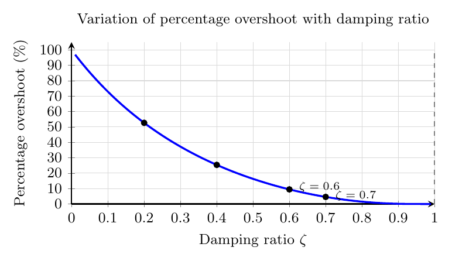
Figure 1.7 shows that the percentage overshoot drops rapidly as the damping ratio increases. Small values of \(\zeta\) lead to highly oscillatory responses with large overshoot, whereas moderate damping significantly reduces the first peak. For example, \(\zeta\approx 0.6\) gives an overshoot of less than \(10\%\), while for \(\zeta\) close to \(1\) the overshoot approaches zero.
As \(\zeta\) increases, the overshoot decreases. When \(\zeta\ge 1\), the standard second-order step response does not overshoot, because the response is no longer underdamped and becomes non-oscillatory.
The rise time is taken as the time required for the response to rise from \(10\%\) to \(90\%\) of its final value. For a standard underdamped second-order system, an exact closed-form expression for this \(10\%\)–\(90\%\) rise time is not especially convenient. Different textbooks use different empirical approximations. One commonly used approximation, valid reasonably well for \[0.3 \leq \zeta \leq 0.8,\] is \[\begin{equation} t_r \approx \frac{2.16\zeta+0.6}{\omega_n}. \label{eq:rise_time_second_order} \end{equation}\]
This approximation is particularly useful in preliminary design and analysis, since it relates the rise time directly to the damping ratio \(\zeta\) and the undamped natural frequency \(\omega_n\).
For fixed \(\zeta\), a larger \(\omega_n\) reduces the rise time and makes the response faster. For fixed \(\omega_n\), a smaller \(\zeta\) usually gives a faster initial rise, but this comes at the cost of more oscillation and overshoot.
Using the \(2\%\) criterion, the settling time is commonly approximated by \[\begin{equation} t_s \approx \frac{4}{\zeta\omega_n}. \label{eq:settling_time_second_order} \end{equation}\]
For the \(5\%\) criterion, a common approximation is \[\begin{equation} t_s \approx \frac{3}{\zeta\omega_n}. \label{eq:settling_time_second_order_5percent} \end{equation}\]
For an underdamped second-order system, the main approximations used in this chapter are \[\omega_d=\omega_n\sqrt{1-\zeta^2},\qquad t_p=\frac{\pi}{\omega_d},\qquad \%OS = 100\,e^{-\frac{\zeta\pi}{\sqrt{1-\zeta^2}}},\] \[t_r \approx \frac{2.16\zeta+0.6}{\omega_n}\quad \text{for } 0.3\leq \zeta \leq 0.8,\qquad t_s \approx \frac{4}{\zeta\omega_n}\quad \text{(2\% criterion)}.\]
Figure 1.8 illustrates the main transient-response characteristics of an underdamped second-order system. In particular, it shows the rise time \(t_r\), the peak time \(t_p\), the percentage overshoot, and the settling time \(t_s\) based on the \(2\%\) criterion.
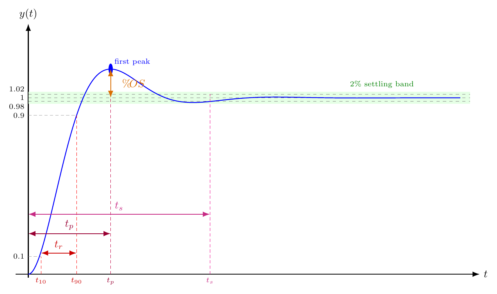
The poles provide immediate insight into the response characteristics.
For underdamped systems, poles are located at \[s=-\zeta\omega_n \pm j\omega_n\sqrt{1-\zeta^2}.\]
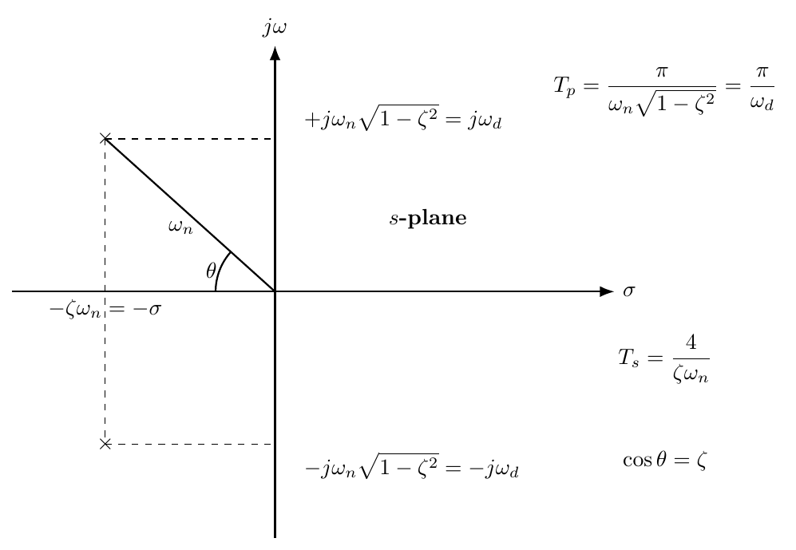
Hence:
the real part \(-\zeta\omega_n\) governs the rate of decay,
the imaginary part \(\omega_d\) governs the oscillation frequency.
How \(\zeta\) and \(\omega_n\) affect the response Increasing \(\omega_n\) generally makes the response faster because the poles move further from the origin. Increasing \(\zeta\) reduces oscillation and overshoot because the poles move toward the negative real axis. Very small \(\zeta\) gives a lightly damped response with large overshoot, while \(\zeta=1\) gives the fastest non-oscillatory response in the standard second-order family.
Figure 1.9 shows the pole locations and their geometric relations with transient-response characteristics. Figure 1.10 compares these effects for three different families of pole motions. When the poles move horizontally with a constant imaginary part, the oscillation frequency remains unchanged because \(\omega_d\) is fixed, and therefore the peak time stays the same, while the settling time and overshoot vary according to the changing real part.
When the poles move vertically with a constant real part, the exponential decay rate remains unchanged, so the systems have essentially the same settling behaviour, whereas the oscillation frequency, peak time, and overshoot change as the imaginary part varies.
Finally, when the poles move along a ray from the origin corresponding to constant damping ratio, the systems have the same damping ratio and therefore exhibit similar overshoot and overall oscillatory character, while their speed changes with distance from the origin: moving further from the origin increases \(\omega_n\), making both the peak time and settling time smaller.
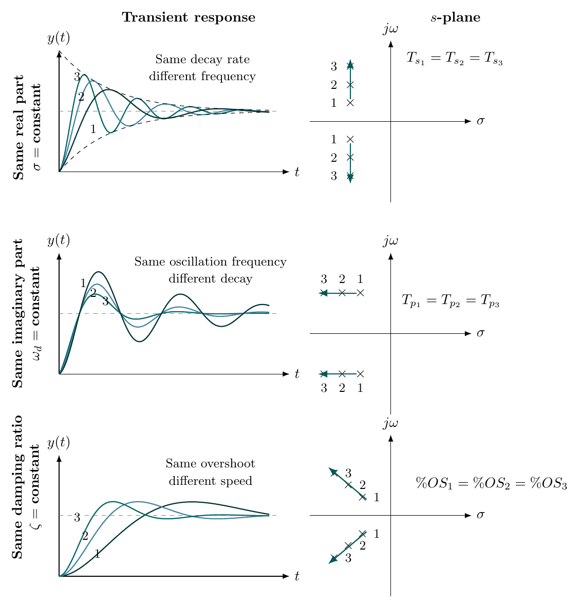
Identifying \(\zeta\), \(\omega_n\), and the poles Consider the system \[G(s)=\frac{25}{s^2+4s+25}.\] Find:
the damping ratio,
the undamped natural frequency,
the damped natural frequency,
the poles,
the type of transient response.
Compare the denominator \[s^2+4s+25\] with the standard form \[s^2+2\zeta\omega_n s+\omega_n^2.\]
Equating coefficients gives \[\omega_n^2=25 \quad \Rightarrow \quad \omega_n=5 \ \text{rad/s},\] and \[2\zeta\omega_n=4.\] Substituting \(\omega_n=5\), \[2\zeta(5)=4 \quad \Rightarrow \quad \zeta=0.4.\]
The damped natural frequency is \[\omega_d=\omega_n\sqrt{1-\zeta^2} =5\sqrt{1-0.4^2} =5\sqrt{0.84} \approx 4.583 \ \text{rad/s}.\]
The poles are \[s=-\zeta\omega_n \pm j\omega_d =-2 \pm j4.583.\]
Since \(0<\zeta<1\), the system is underdamped. Therefore the response is oscillatory with decaying amplitude.
A second-order system has damping ratio \(\zeta=0.5\). Determine the percentage overshoot.
Using \[\%OS = 100\,e^{-\frac{\zeta\pi}{\sqrt{1-\zeta^2}}},\] we obtain \[\%OS = 100\,e^{-\frac{0.5\pi}{\sqrt{1-0.5^2}}}.\]
Since \[\sqrt{1-0.25}= 0.8660,\] \[\%OS \approx 100\,e^{-\frac{0.5\pi}{0.8660}} =100\,e^{-1.8138} = 16.3\%.\]
Consider the standard second-order system with \(\zeta=0.3,\) and \(\omega_n=8 \; \text{rad/s}\).
Find:
the damped natural frequency,
the peak time,
the approximate rise time,
the approximate settling time using the \(2\%\) criterion.
First, \[\omega_d=\omega_n\sqrt{1-\zeta^2} =8\sqrt{1-0.3^2} =8\sqrt{0.91} \approx 7.631 \ \text{rad/s}.\]
Thus, \[\boxed{\omega_d \approx 7.631 \ \text{rad/s}}.\]
The peak time is \[t_p=\frac{\pi}{\omega_d} =\frac{\pi}{7.631} \approx 0.412 \ \text{s}.\]
Since \(0.3 \leq \zeta \leq 0.8\), we may use the rise-time approximation \[t_r \approx \frac{2.16\zeta+0.6}{\omega_n}.\] Substituting \(\zeta=0.3\) and \(\omega_n=8\), \[t_r \approx \frac{2.16(0.3)+0.6}{8} =\frac{0.648+0.6}{8} =\frac{1.248}{8} =0.156 \ \text{s}.\]
Hence, \[\boxed{t_r \approx 0.156 \ \text{s}}.\]
The settling time is \[t_s \approx \frac{4}{\zeta\omega_n} =\frac{4}{0.3\times 8} =\frac{4}{2.4} \approx 1.667 \ \text{s}.\]
Therefore, \[\boxed{t_p \approx 0.412 \ \text{s}},\qquad \boxed{t_r \approx 0.156 \ \text{s}},\qquad \boxed{t_s \approx 1.667 \ \text{s}}.\]
Finding \(\zeta\) from a specified overshoot A designer requires that the percentage overshoot of a closed-loop second-order system should not exceed \(10\%\). Estimate the required damping ratio.
We use \[10 = 100\,e^{-\frac{\zeta\pi}{\sqrt{1-\zeta^2}}}.\] Thus \[0.1=e^{-\frac{\zeta\pi}{\sqrt{1-\zeta^2}}}.\] Taking natural logarithms, \[\ln(0.1)=-2.3026.\] Hence \[-\frac{\zeta\pi}{\sqrt{1-\zeta^2}}=-2.3026.\] Solving gives approximately \[\zeta \approx 0.591.\]
Hence a damping ratio of about \[\boxed{\zeta \approx 0.59}\] is required to keep the overshoot near or below \(10\%\).
The poles of a second-order system are \[s=-3\pm j4.\] Discuss the likely transient response.
The poles are complex conjugates in the left-half plane. Therefore the system is stable and underdamped. The real part \(-3\) indicates exponential decay, while the imaginary part \(4\) indicates oscillation. Hence the transient response will:
oscillate,
exhibit overshoot,
decay to the steady-state value as time increases.
Consider the unity-feedback system shown below, where \[C(s)=\frac{K}{s+a}, \qquad G(s)=\frac{1}{s+2}.\]
Determine the controller parameters \(K\) and \(a\) such that the closed-loop system satisfies \[{T_s}^{5\%}\leq 1~\text{s}, \qquad \%OS \leq 10\%.\] Then verify the design in MATLAB.
The open-loop transfer function is \[C(s)G(s)=\frac{K}{(s+a)(s+2)}.\] With unity feedback, the closed-loop transfer function becomes \[\begin{align} G_{cl}(s) &=\frac{C(s)G(s)}{1+C(s)G(s)} =\frac{\dfrac{K}{(s+a)(s+2)}}{1+\dfrac{K}{(s+a)(s+2)}} \nonumber\\ &=\frac{K}{s^2+(a+2)s+(2a+K)}. \label{eq:example_cl_tf} \end{align}\]
We compare the denominator with the standard second-order characteristic polynomial \[s^2+2\zeta\omega_n s+\omega_n^2.\] Hence, by equating coefficients, \[\begin{equation} 2\zeta\omega_n=a+2, \qquad \omega_n^2=2a+K. \label{eq:coeff_matching_example} \end{equation}\]
Step 1: Use the settling-time specification.
For the \(5\%\) settling-time criterion, \[{T_s}^{5\%}\approx \frac{3}{\zeta\omega_n}.\] The requirement \({T_s}^{5\%}\leq 1\) gives \[\frac{3}{\zeta\omega_n}\leq 1 \qquad \Rightarrow \qquad \zeta\omega_n \geq 3.\] For a design on the specification boundary, we choose \[\begin{equation} \zeta\omega_n=3. \label{eq:zeta_wn_eq_3} \end{equation}\]
Step 2: Use the overshoot specification.
For a standard underdamped second-order system, \[\%OS = 100\,e^{-\frac{\zeta\pi}{\sqrt{1-\zeta^2}}}.\] Setting \(\%OS=10\%\) gives the minimum damping ratio required: \[\zeta = \frac{-\ln(0.1)}{\sqrt{\pi^2+\ln^2(0.1)}} \approx 0.591.\] Thus any \[\zeta \geq 0.591\] satisfies the overshoot requirement. For convenience, choose \[\begin{equation} \zeta=0.6. \label{eq:zeta_choice_example} \end{equation}\]
Step 3: Determine \(\omega_n\).
From [eq:zeta_wn_eq_3], \[\zeta\omega_n=3.\] With \(\zeta=0.6\), \[0.6\,\omega_n=3 \qquad \Rightarrow \qquad \omega_n=5~\text{rad/s}.\]
Step 4: Match coefficients to find \(a\) and \(K\).
From [eq:coeff_matching_example], \[a+2=2\zeta\omega_n=2(0.6)(5)=6.\] Hence \[a=4.\] Also, \[2a+K=\omega_n^2=25.\] Substituting \(a=4\), \[2(4)+K=25 \qquad \Rightarrow \qquad K=17.\]
Therefore, the controller parameters are \[\boxed{a=4}, \qquad \boxed{K=17}.\]
The resulting controller is \[\boxed{C(s)=\frac{17}{s+4}}.\]
Step 5: Write the closed-loop transfer function.
Substituting \(a=4\) and \(K=17\) into [eq:example_cl_tf], \[G_{cl}(s)=\frac{17}{s^2+6s+25}.\] The denominator matches the standard second-order characteristic polynomial with \[\omega_n=5, \qquad \zeta=0.6.\] Therefore, the pole-based transient characteristics are expected to be \[{T_s}^{5\%}\approx \frac{3}{\zeta\omega_n} =\frac{3}{0.6\times 5} =1~\text{s},\] and \[\%OS = 100\,e^{-\frac{0.6\pi}{\sqrt{1-0.6^2}}} \approx 9.48\%.\] So the settling-time and overshoot specifications are satisfied.
However, note that the numerator is not equal to \(\omega_n^2\), so the closed-loop transfer function is not exactly the canonical standard second-order form with unit DC gain. In fact, \[G_{cl}(0)=\frac{17}{25},\] so a unit-step input produces a final value of \(17/25\), not \(1\).
MATLAB verification
The MATLAB script Listing [lst:controller_design_verification] can be used to verify the design. The MATLAB results should confirm that the closed-loop system has a \(5\%\) settling time close to \(1\) second and an overshoot below \(10\%\).
import numpy as np
import matplotlib.pyplot as plt
import control as ctrl
s = ctrl.tf('s')
K = 17
a = 4
Gc = K/(s+a)
G = 1/(s+2)
T = ctrl.feedback(Gc*G, 1)
print('Closed-loop transfer function:')
print(T)
_resp = ctrl.step_response(T)
t, y = _resp.time, _resp.outputs
plt.plot(t, y)
plt.grid(True)
plt.title('Closed-Loop Step Response')
plt.xlabel('Time (s)')
plt.ylabel('Output')
plt.show()
info = ctrl.step_info(T)
print('Step response information:')
for key, val in info.items():
print(f" {key}: {val:.4f}" if isinstance(val, float) else f" {key}: {val}")
zeta = 0.6
OS = 100*np.exp(-(zeta*np.pi)/np.sqrt(1-zeta**2))
print("Predicted overshoot = %.2f %%" % OS)clc; clear; close all;
s = tf('s');
K = 17;
a = 4;
Gc = K/(s+a);
G = 1/(s+2);
T = feedback(Gc*G,1);
disp('Closed-loop transfer function:')
T
figure;
step(T);
grid on;
title('Closed-Loop Step Response');
xlabel('Time (s)');
ylabel('Output');
info = stepinfo(T,'SettlingTimeThreshold',0.05);
disp('Step response information (5% settling criterion):')
disp(info)
zeta = 0.6;
OS = 100*exp(-(zeta*pi)/sqrt(1-zeta^2));
fprintf('Predicted overshoot = %.2f %%\n', OS);Consider the rotational mechanical system shown in Figure 1.11, where the torsional stiffness is \[K=5~\text{N}\,\text{m/rad}.\] Determine the inertia \(J\) and damping coefficient \(D\) such that the response to a unit-step torque input \(T(t)\) has \[\%OS=20\%, \qquad T_s^{2\%}=2~\text{s}.\]
Let \(\theta(t)\) denote the angular displacement. The equation of motion of the rotational spring–mass–damper system is \[\begin{equation} J\ddot{\theta}(t)+D\dot{\theta}(t)+K\theta(t)=T(t). \label{eq:rotational_system_eom} \end{equation}\]
Taking the Laplace transform under zero initial conditions gives \[(Js^2+Ds+K)\Theta(s)=T(s).\] Hence the transfer function from input torque to angular displacement is \[\begin{equation} \frac{\Theta(s)}{T(s)}=\frac{1}{Js^2+Ds+K}. \label{eq:rotational_tf} \end{equation}\]
Dividing numerator and denominator by \(J\), \[\frac{\Theta(s)}{T(s)} = \frac{1/J}{s^2+\dfrac{D}{J}s+\dfrac{K}{J}}.\] Comparing the denominator with the standard second-order form \[s^2+2\zeta\omega_n s+\omega_n^2,\] we identify \[\begin{equation} 2\zeta\omega_n=\frac{D}{J}, \qquad \omega_n^2=\frac{K}{J}. \label{eq:rotational_parameter_matching} \end{equation}\]
Step 1: Find the damping ratio from the overshoot specification.
For an underdamped second-order system, \[\%OS = 100\,e^{-\frac{\zeta\pi}{\sqrt{1-\zeta^2}}}.\] With \(\%OS=20\%\), \[\zeta= \frac{-\ln(0.2)}{\sqrt{\pi^2+\ln^2(0.2)}}.\] Since \[\ln(0.2)\approx -1.6094,\] we obtain \[\zeta \approx \frac{1.6094}{\sqrt{\pi^2+1.6094^2}} \approx 0.456.\] Thus, \[\boxed{\zeta \approx 0.456}.\]
Step 2: Use the settling-time specification to find \(\omega_n\).
For the \(2\%\) settling-time criterion, \[T_s^{2\%}\approx \frac{4}{\zeta\omega_n}.\] Given that \(T_s^{2\%}=2~\text{s}\), \[2=\frac{4}{\zeta\omega_n} \qquad \Rightarrow \qquad \zeta\omega_n=2.\] Hence \[\omega_n=\frac{2}{\zeta} =\frac{2}{0.456} \approx 4.386~\text{rad/s}.\] Therefore, \[\boxed{\omega_n \approx 4.386~\text{rad/s}}.\]
Step 3: Determine the inertia \(J\).
From [eq:rotational_parameter_matching], \[\omega_n^2=\frac{K}{J} \qquad \Rightarrow \qquad J=\frac{K}{\omega_n^2}.\] Substituting \(K=5\) and \(\omega_n\approx 4.386\), \[J=\frac{5}{(4.386)^2}= 0.260~\text{kg}\,\text{m}^2.\]
Step 4: Determine the damping coefficient \(D\).
Again from [eq:rotational_parameter_matching], \[2\zeta\omega_n=\frac{D}{J}.\] Since \(\zeta\omega_n=2\), \[2\zeta\omega_n=4.\] Thus \(D=4J\).
Substituting \(J= 0.260\), \[D= 4(0.260)=1.040~\text{N}\,\text{m}\,\text{s/rad}.\] Hence, \[\boxed{D = 1.04~\text{N}\,\text{m}\,\text{s/rad}}.\]
Check of the design
Using these values, \[\omega_n=\sqrt{\frac{K}{J}} =\sqrt{\frac{5}{0.260}} \approx 4.386~\text{rad/s},\] and \[\zeta=\frac{D}{2\sqrt{KJ}} =\frac{1.04}{2\sqrt{5\times 0.260}} \approx 0.456.\] Therefore, \[\%OS \approx 20\%, \qquad {T_s}^{2\%}\approx \frac{4}{\zeta\omega_n} =\frac{4}{2} =2~\text{s},\] which confirms that the specifications are satisfied.
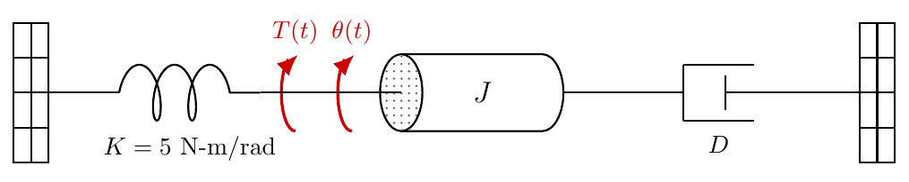
The transient-response measures above describe how a system reaches its final value. Equally important is how accurate that final value is. The sse measures the remaining difference between the reference input and the output after transients have died away.
A system may be stable with acceptable transient behaviour, yet settle with a significant offset from the desired value.
In a temperature-control system, the user may request \(22^\circ\text{C}\), but the room may settle at \(20^\circ\text{C}\). The system is stable, yet it has a steady-state error.
In a cruise-control system, the vehicle may settle below the commanded speed when travelling uphill if the controller cannot remove the offset.
In a position-control system, a motor may move close to the demanded angle but stop short of the exact target.
For a unity-feedback system, the tracking error is \[e(t)=r(t)-y(t),\] where \(r(t)\) is the reference input and \(y(t)\) is the output. For a non-unity feedback system, the signal entering the summing junction is instead \[e(t)=r(t)-y_m(t),\] where \(y_m(t)\) is the measured output returned by the feedback path. These two definitions coincide only when the feedback path has unity gain.
The steady-state error is the limiting value of the error signal as time tends to infinity: \[e_{ss}=\lim_{t\to\infty} e(t),\] provided this limit exists.
If \(e_{ss}=0\), the system tracks the input exactly in steady state. If \(e_{ss}\neq 0\), the system settles with a residual offset. If the limit does not exist, then a constant steady-state error cannot be defined.
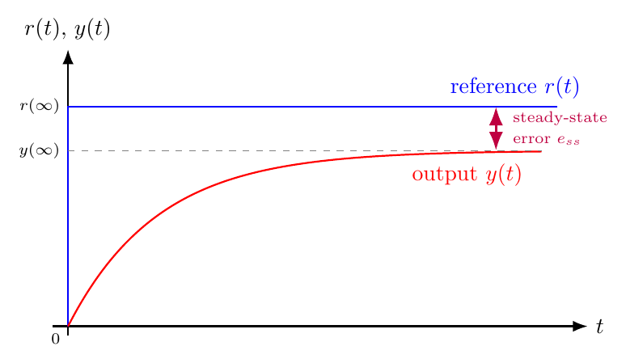
Figure 1.12 illustrates the tracking error for the unity-feedback case. The steady-state error is meaningful only if the error signal approaches a constant value; if the system is unstable or oscillates indefinitely, \(e_{ss}\) does not exist.
If \(E(s)\) is the Laplace transform of \(e(t)\), the final value theorem gives \[e_{ss}=\lim_{t\to\infty}e(t)=\lim_{s\to 0}sE(s),\] provided the final value theorem is applicable.
The final value theorem requires that all poles of \(sE(s)\) lie in the open left half-plane — in particular, the closed-loop system must be stable.
Consider the standard feedback system shown in Figure 1.13, with forward transfer function \(G(s)\) and feedback transfer function \(H(s)\). Here \(E(s)\) denotes the error at the summing junction, namely the difference between the reference and the measured feedback signal \(B(s)\).
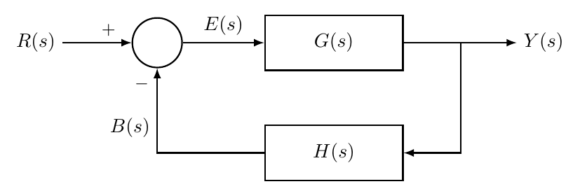
Since \[Y(s)=G(s)E(s), \qquad B(s)=H(s)Y(s), \qquad E(s)=R(s)-B(s),\] we obtain \[E(s)=R(s)-H(s)Y(s)=R(s)-H(s)G(s)E(s).\] Hence, \[E(s)\bigl(1+G(s)H(s)\bigr)=R(s),\] so \[\begin{equation} E(s)=\frac{R(s)}{1+G(s)H(s)}. \label{eq:ss_error_general_feedback} \end{equation}\]
For the important special case of unity feedback, \(H(s)=1\), this becomes \[\begin{equation} E(s)=\frac{R(s)}{1+G(s)}. \label{eq:ss_error_unity_feedback} \end{equation}\]
Therefore, for a stable unity-feedback system, \[\begin{equation} e_{ss}=\lim_{s\to 0} s\,\frac{R(s)}{1+G(s)}. \label{eq:ss_error_fvt_unity} \end{equation}\]
The steady-state error depends on both the system and the applied input. The standard test signals are: \[\text{step: } R(s)=\frac{A}{s}, \qquad \text{ramp: } R(s)=\frac{A}{s^2}, \qquad \text{parabolic: } R(s)=\frac{A}{s^3}.\]
Equivalently, in the time domain these may be written as \[r(t)=A\,u_0(t), \qquad r(t)=At\,u_0(t), \qquad r(t)=\frac{A}{2}t^2\,u_0(t).\]
A step input models a sudden change in the desired value, such as a new temperature set-point or a new speed command.
A ramp input models a command that changes at a constant rate, such as a position reference generated by constant desired velocity.
A parabolic input models an accelerating command.
Finite steady-state error to a step input Consider a unity-feedback system with forward transfer function \[G(s)=\frac{10}{s+2}.\] Find the steady-state error at the summing junction for a unit-step input.
For a unit-step input, \[R(s)=\frac{1}{s}.\] Since the system has unity feedback, \[E(s)=\frac{R(s)}{1+G(s)} = \frac{\frac{1}{s}}{1+\frac{10}{s+2}}.\] Simplifying, \[E(s)=\frac{1}{s}\cdot \frac{s+2}{s+12} = \frac{s+2}{s(s+12)}.\] Using the final value theorem, \[e_{ss}=\lim_{s\to 0}sE(s) = \lim_{s\to 0}\frac{s+2}{s+12} = \frac{2}{12} = \frac{1}{6}.\] Hence, \[e_{ss}=\frac{1}{6}.\]
The system is stable, but it does not remove the final offset completely. In practice, this means that the output settles near the demanded value, but not exactly at it.
Zero steady-state error to a step input Consider a unity-feedback system with forward transfer function \[G(s)=\frac{10}{s(s+2)}.\] Find the steady-state error for a unit-step input.
For a unit-step input, \[R(s)=\frac{1}{s}.\] Then \[E(s)=\frac{R(s)}{1+G(s)} = \frac{\frac{1}{s}}{1+\frac{10}{s(s+2)}}.\] Simplifying, \[E(s)=\frac{1}{s}\cdot \frac{s(s+2)}{s(s+2)+10} = \frac{s+2}{s^2+2s+10}.\] Therefore, \[e_{ss}=\lim_{s\to 0}sE(s) = \lim_{s\to 0}\frac{s(s+2)}{s^2+2s+10} = 0.\] Hence, \[e_{ss}=0.\]
The extra pole at the origin in the forward path allows the system to eliminate the steady-state error for a step input.
Finite steady-state error to a ramp input Consider again the unity-feedback system \[G(s)=\frac{10}{s(s+2)}.\] Find the steady-state error for a unit-ramp input.
For a unit-ramp input, \[R(s)=\frac{1}{s^2}.\] Then \[E(s)=\frac{R(s)}{1+G(s)} = \frac{\frac{1}{s^2}}{1+\frac{10}{s(s+2)}}.\] Simplifying, \[E(s)=\frac{1}{s^2}\cdot \frac{s(s+2)}{s(s+2)+10} = \frac{s+2}{s\bigl(s^2+2s+10\bigr)}.\] Using the final value theorem, \[e_{ss}=\lim_{s\to 0}sE(s) = \lim_{s\to 0}\frac{s+2}{s^2+2s+10} = \frac{2}{10} = \frac{1}{5}.\] Hence, \[e_{ss}=\frac{1}{5}.\]
This means that the system cannot follow a ramp input perfectly. It tracks the ramp with a constant long-term lag.
Zero steady-state error to a ramp input Consider a unity-feedback system with forward transfer function \[G(s)=\frac{10}{s^2(s+2)}.\] Find the steady-state error for a unit-ramp input.
For a unit-ramp input, \[R(s)=\frac{1}{s^2}.\] Hence, \[E(s)=\frac{R(s)}{1+G(s)} = \frac{\frac{1}{s^2}}{1+\frac{10}{s^2(s+2)}}.\] Simplifying, \[E(s)=\frac{1}{s^2}\cdot \frac{s^2(s+2)}{s^2(s+2)+10} = \frac{s+2}{s^2(s+2)+10}.\] Therefore, \[e_{ss}=\lim_{s\to 0}sE(s) = \lim_{s\to 0}\frac{s(s+2)}{s^2(s+2)+10} = 0.\]
Hence, \[\boxed{e_{ss}=0.}\]
With two poles at the origin in the forward path, the system can track a ramp input without steady-state error.
Unbounded steady-state error for an input that is too demanding Consider the unity-feedback system \[G(s)=\frac{10}{s(s+2)}.\] Find the steady-state error for a unit-parabolic input.
For a unit-parabolic input, \[r(t)=\frac{1}{2}t^2\,u_0(t), \qquad R(s)=\frac{1}{s^3}.\] Thus, \[E(s)=\frac{R(s)}{1+G(s)} = \frac{\frac{1}{s^3}}{1+\frac{10}{s(s+2)}}.\] Simplifying, \[E(s)=\frac{1}{s^3}\cdot \frac{s(s+2)}{s(s+2)+10} = \frac{s+2}{s^2\bigl(s^2+2s+10\bigr)}.\] Now, \[sE(s)=\frac{s+2}{s\bigl(s^2+2s+10\bigr)}.\] As \(s\to 0\), this expression becomes unbounded. Therefore, the steady-state error does not approach a finite constant; instead, it grows without bound.
Hence the system cannot track a parabolic input satisfactorily. In practical terms, the reference changes too aggressively for the available low-frequency dynamics of the forward path.
Steady-state error for a system with sensor dynamics Consider the feedback system shown in Figure 1.13, where the forward transfer function is \[G(s)=\frac{15}{s+3},\] and the feedback path contains sensor dynamics described by \[H(s)=\frac{2}{s+4}.\] This is therefore not a unity-feedback system, because the measured output is modified by the sensor before it is fed back.
Find the steady-state error for a unit-step input.
Since the feedback path contains sensor dynamics, we must use the general error transfer function \[E(s)=\frac{R(s)}{1+G(s)H(s)}.\]
For a unit-step input, \[R(s)=\frac{1}{s}.\] Hence \[E(s)=\dfrac{\frac{1}{s}}{1+\frac{15}{s+3}\cdot \frac{2}{s+4}}.\]
First simplify the loop term: \[G(s)H(s)=\frac{30}{(s+3)(s+4)}.\] Therefore, \[E(s)=\frac{1}{s}\cdot \frac{(s+3)(s+4)}{(s+3)(s+4)+30}.\]
Expanding, \[(s+3)(s+4)=s^2+7s+12,\] so \[E(s)=\frac{1}{s}\cdot \frac{s^2+7s+12}{s^2+7s+42} = \frac{s^2+7s+12}{s\left(s^2+7s+42\right)}.\]
Using the final value theorem, \[e_{ss}=\lim_{s\to 0}sE(s) = \lim_{s\to 0}\frac{s^2+7s+12}{s^2+7s+42} = \frac{12}{42} = \frac{2}{7}.\] Hence, \[e_{ss}=\frac{2}{7}.\]
This example shows that when the sensor has its own dynamics, the feedback path is no longer unity. The sensor affects the loop transfer function through \(H(s)\), and therefore it also affects the error signal seen at the summing junction. In such cases, the shortcut \[E(s)=\frac{R(s)}{1+G(s)}\] cannot be used; instead, the full expression \[E(s)=\frac{R(s)}{1+G(s)H(s)}\] must be applied.
The worked examples reveal an important pattern. For the standard polynomial test signals, \[R(s)=\frac{A}{s},\qquad \frac{A}{s^2},\qquad \frac{A}{s^3},\] the poles of the input all lie at the origin. Therefore, what matters is how many poles at the origin appear in the forward transfer function.
To obtain zero steady-state error, the forward path must contain sufficient copies of the pole of the input signal. For the standard step, ramp, and parabolic inputs, this means sufficient poles at the origin in the forward transfer function.
In particular:
to obtain zero steady-state error for a step input, at least one pole at the origin is required in the forward path;
to obtain zero steady-state error for a ramp input, at least two poles at the origin are required;
to obtain zero steady-state error for a parabolic input, at least three poles at the origin are required.
A pole at the origin corresponds to an integrating effect. Integrating action accumulates error over time and forces the controller or plant to continue acting until the offset is removed. More poles at the origin provide stronger low-frequency tracking capability, but they also make the system more demanding to stabilise.
For a stable LTI feedback system, the steady-state error can be found systematically as follows.
Write down the reference input \(R(s)\).
Derive the error transfer function \(E(s)\).
Compute \[e_{ss}=\lim_{s\to 0}sE(s).\]
Interpret the result:
\(e_{ss}=0\): exact tracking in steady state,
\(e_{ss}\neq 0\): finite offset remains,
\(e_{ss}\) unbounded or limit does not exist: the input cannot be tracked with a finite constant steady-state error.
Steady-state error results can be summarised using system type and static error constants.
The type number of a unity-feedback system is the number of free integrators (poles at \(s=0\)) in the open-loop transfer function \(G(s)\).
Type 0: no integrator in \(G(s)\),
Type 1: one integrator (\(1/s\) factor),
Type 2: two integrators (\(1/s^2\) factor).
The static error constants are defined as: \[K_p = \lim_{s \to 0} G(s), \qquad K_v = \lim_{s \to 0} s\,G(s), \qquad K_a = \lim_{s \to 0} s^2 G(s),\] where \(K_p\) is the position error constant, \(K_v\) is the velocity error constant, and \(K_a\) is the acceleration error constant.
The steady-state errors for standard inputs in a stable unity-feedback system are summarised in Table 1.1.
| Input | Type 0 | Type 1 | Type 2 |
|---|---|---|---|
| Step (\(1/s\)) | \(\dfrac{1}{1+K_p}\) | \(0\) | \(0\) |
| Ramp (\(1/s^2\)) | \(\infty\) | \(\dfrac{1}{K_v}\) | \(0\) |
| Parabolic (\(1/s^3\)) | \(\infty\) | \(\infty\) | \(\dfrac{1}{K_a}\) |
Increasing the system type (adding integrators) improves tracking accuracy for polynomial inputs, but makes stability harder to achieve. This is a fundamental trade-off in controller design.
Rate feedback design with steady-state error analysis Consider the rate feedback system shown in Figure 1.14. The plant transfer function is \(\dfrac{K}{s(s+5)}\) and the inner (rate) feedback gain is \(K_t\,s\).
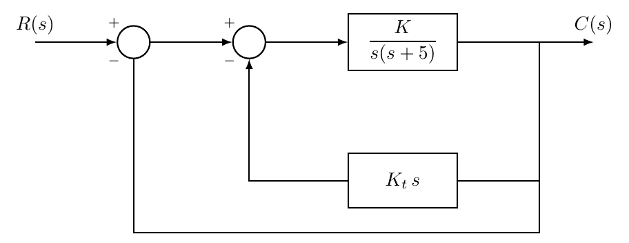
Find the values of \(K\) and \(K_t\) so that the closed-loop poles are at \(s_{1,2} = -3 \pm j4\).
Determine the system type and order.
Find the steady-state error for a unit ramp input.
Verify the design in MATLAB by plotting the step response, ramp response, tracking error, and pole locations.
(a) Finding \(K\) and \(K_t\).
First, reduce the inner loop. The forward path of the inner loop is \(G(s) = K/[s(s+5)]\) and its feedback is \(H(s) = K_t\,s\), so the inner closed-loop transfer function is \[G_{\mathrm{inner}}(s) = \frac{K/[s(s+5)]}{1 + K_t\,s \cdot K/[s(s+5)]} = \frac{K}{s^2 + (5 + K K_t)\,s}.\] The outer loop has unity feedback, so the overall closed-loop transfer function is \[T(s) = \frac{G_{\mathrm{inner}}(s)}{1 + G_{\mathrm{inner}}(s)} = \frac{K}{s^2 + (5 + K K_t)\,s + K}.\] The desired characteristic equation from the specified poles is \[(s + 3 - j4)(s + 3 + j4) = s^2 + 6s + 25 = 0.\] Comparing coefficients: \[K = 25, \qquad 5 + K K_t = 6 \quad\Longrightarrow\quad K_t = \frac{1}{25} = 0.04.\]
(b) System type and order.
The open-loop transfer function of the outer loop is \[G_{\mathrm{ol}}(s) = G_{\mathrm{inner}}(s) = \frac{25}{s(s + 6)}.\] There is one free integrator (\(1/s\)) in the forward path, so the system is type 1 and order 2.
(c) Steady-state error.
For a type-1 system, the steady-state error to a unit ramp is \(e_{ss} = 1/K_v\), where \[K_v = \lim_{s \to 0}\, s\,G_{\mathrm{ol}}(s) = \lim_{s \to 0}\, s \cdot \frac{25}{s(s+6)} = \frac{25}{6} \approx 4.17.\] Therefore \[e_{ss} = \frac{1}{K_v} = \frac{6}{25} = 0.24.\]
As a consistency check, the closed-loop transfer function is \(T(s) = 25/(s^2+6s+25)\), which is a standard second-order system with \(\omega_n = 5\) rad/s and \(\zeta = 0.6\), confirming the poles at \(s = -3 \pm j4\).
(d) MATLAB verification.
Write a MATLAB script to verify the design. The code should construct the closed-loop transfer function, confirm the pole locations, plot the step and ramp responses, and read off the steady-state error.
MATLAB verification of the rate feedback design.
import numpy as np
import matplotlib.pyplot as plt
import control as ctrl
K = 25
Kt = 0.04
# Inner-loop reduction
G = ctrl.tf(K, np.array([1, 5, 0])) # K / [s(s+5)]
H_inner = ctrl.tf(np.array([Kt, 0]), [1]) # Kt*s
G_inner = ctrl.feedback(G, H_inner)
# Outer closed-loop (unity feedback)
T = ctrl.feedback(G_inner, 1)
print('Closed-loop TF:')
print(T)
# Verify pole locations
p = ctrl.poles(T)
print("Poles:", p)
# Step response
plt.figure(figsize=(10, 8))
plt.subplot(2, 2, 1)
_resp = ctrl.step_response(T, 3)
t_step, y_step = _resp.time, _resp.outputs
plt.plot(t_step, y_step)
plt.grid(True)
plt.title('Step response')
info = ctrl.step_info(T)
print("Overshoot = %.1f%%, Ts = %.2f s" % (info['Overshoot'], info['SettlingTime']))
# Ramp response
plt.subplot(2, 2, 2)
t = np.arange(0, 5.01, 0.01)
r = t
_resp = ctrl.forced_response(T, T=t, U=r)
t_r, y_r = _resp.time, _resp.outputs
plt.plot(t, r, 'r--', label='Reference')
plt.plot(t_r, y_r, 'b', label='Output')
plt.legend()
plt.grid(True)
plt.title('Ramp response')
# Ramp tracking error
plt.subplot(2, 2, 3)
plt.plot(t_r, r - y_r, 'b', label='e(t)')
plt.axhline(y=6/25, color='r', linestyle='--', label='e_ss = 6/25')
plt.grid(True)
plt.title('Ramp tracking error')
plt.legend()
# Pole-zero map
plt.subplot(2, 2, 4)
poles = ctrl.poles(T)
zeros = ctrl.zeros(T)
plt.plot(np.real(poles), np.imag(poles), 'rx', markersize=10, label='Poles')
if len(zeros) > 0:
plt.plot(np.real(zeros), np.imag(zeros), 'bo', markersize=10, label='Zeros')
plt.axhline(y=0, color='k', linewidth=0.5)
plt.axvline(x=0, color='k', linewidth=0.5)
plt.grid(True)
plt.title('Pole-zero map')
plt.xlabel('Real')
plt.ylabel('Imaginary')
plt.tight_layout()
plt.show()K = 25;
Kt = 0.04;
% Inner-loop reduction
G = tf(K, [1 5 0]); % K / [s(s+5)]
H_inner = tf([Kt 0], 1); % Kt*s
G_inner = feedback(G, H_inner);
% Outer closed-loop (unity feedback)
T = feedback(G_inner, 1);
disp('Closed-loop TF:'); T
% Verify pole locations
p = pole(T);
fprintf('Poles: %.2f +/- j%.2f\n', real(p(1)), abs(imag(p(1))));
% Step response
figure;
subplot(2,2,1); step(T, 3); grid on;
title('Step response');
info = stepinfo(T);
fprintf('Overshoot = %.1f%%, Ts = %.2f s\n', info.Overshoot, info.SettlingTime);
% Ramp response
subplot(2,2,2);
t = 0:0.01:5; r = t;
y = lsim(T, r, t);
plot(t, r, 'r--', t, y, 'b', 'LineWidth', 1.5);
legend('Reference','Output'); grid on;
title('Ramp response');
% Ramp tracking error
subplot(2,2,3);
plot(t, r - y, 'b', 'LineWidth', 1.5); grid on;
yline(6/25, 'r--', 'LineWidth', 1.5);
title('Ramp tracking error');
legend('e(t)', 'e_{ss} = 6/25');
% Pole-zero map
subplot(2,2,4); pzmap(T); grid on;
title('Pole-zero map');Figure 1.15 shows the results. The step response confirms \(\%OS = 9.5\%\) and \(T_s \approx 1.2\,\)s, consistent with \(\zeta = 0.6\). The ramp error settles to \(e_{ss} = 6/25 = 0.24\), matching the analytical prediction.
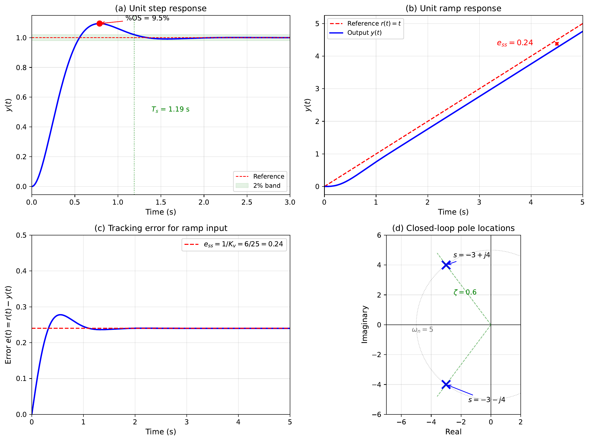
Try it yourself MATLAB can extract all the key time-response specifications automatically. Listing [lst:ch6_time_response_specs] creates a first-order and a second-order system, plots their step responses, and reads off rise time, settling time, overshoot, damping ratio, and natural frequency.
Extracting time-response specifications in MATLAB.
import numpy as np
import matplotlib.pyplot as plt
import control as ctrl
tau = 0.5
G1 = ctrl.tf(1, np.array([tau, 1]))
plt.figure()
_resp = ctrl.step_response(G1, 5)
t1, y1 = _resp.time, _resp.outputs
plt.plot(t1, y1)
plt.title('First-Order Step Response')
plt.grid(True)
plt.show()
info1 = ctrl.step_info(G1)
print('First-order: Rise time = %.2f s, Settling time = %.2f s' % (info1['RiseTime'], info1['SettlingTime']))
# --- Second-order system: G2 = wn^2 / (s^2 + 2*zeta*wn*s + wn^2) ---
wn = 4
zeta = 0.3
G2 = ctrl.tf(wn**2, [1, 2*zeta*wn, wn**2])
plt.figure()
_resp = ctrl.step_response(G2, 5)
t2, y2 = _resp.time, _resp.outputs
plt.plot(t2, y2)
plt.title('Second-Order Step Response')
plt.grid(True)
plt.show()
info2 = ctrl.step_info(G2)
print('Second-order: Overshoot = %.1f%%, Settling time = %.2f s' % (info2['Overshoot'], info2['SettlingTime']))
# --- Extract damping ratio and natural frequency from any system ---
print('\nDamping and natural frequency:')
ctrl.damp(G2)tau = 0.5;
G1 = tf(1, [tau 1]);
figure;
step(G1, 5); title('First-Order Step Response'); grid on;
info1 = stepinfo(G1);
fprintf('First-order: Rise time = %.2f s, Settling time = %.2f s\n', ...
info1.RiseTime, info1.SettlingTime);
% --- Second-order system: G2 = wn^2 / (s^2 + 2*zeta*wn*s + wn^2) ---
wn = 4; zeta = 0.3;
G2 = tf(wn^2, [1 2*zeta*wn wn^2]);
figure;
step(G2, 5); title('Second-Order Step Response'); grid on;
info2 = stepinfo(G2);
fprintf('Second-order: Overshoot = %.1f%%, Settling time = %.2f s\n', ...
info2.Overshoot, info2.SettlingTime);
% --- Extract damping ratio and natural frequency from any system ---
damp(G2) % prints zeta, wn, and poles in a tableKey Takeaways
A first-order system \(G(s)=K/(\tau s+1)\) has rise time \(t_r\approx 2.2\tau\) and settling time \(t_s\approx 4\tau\) (2% criterion).
Second-order systems are classified by damping ratio: underdamped (\(0<\zeta<1\)), critically damped (\(\zeta=1\)), overdamped (\(\zeta>1\)).
For underdamped systems: \(\%OS = 100\,e^{-\zeta\pi/\sqrt{1-\zeta^2}}\), \(t_p = \pi/\omega_d\), \(t_s \approx 4/(\zeta\omega_n)\).
Pole locations on the \(s\)-plane directly determine response character: real part controls decay rate, imaginary part controls oscillation frequency.
Constant-\(\zeta\) lines are rays from the origin; constant-\(\sigma\) lines are vertical; constant-\(\omega_d\) lines are horizontal.
Steady-state error depends on both the system type (number of integrators in \(G(s)\)) and the input signal.
Each additional integrator in the forward path eliminates SSE for one higher power of \(s\) in the input, but makes stability harder to achieve.
A first-order system has the transfer function \[G(s)=\frac{8}{s+4}.\]
Identify the time constant \(\tau\) and the DC gain.
What is the value of the output at \(t=\tau\) when a unit step is applied?
How long does it take for the output to reach 98% of its final value?
A second-order system has the transfer function \[G(s)=\frac{25}{s^2+6s+25}.\]
Find the natural frequency \(\omega_n\) and damping ratio \(\zeta\).
Classify the system as underdamped, critically damped, or overdamped.
Calculate the percentage overshoot and the approximate settling time (2% criterion).
For the standard second-order transfer function \[G(s)=\frac{\omega_n^2}{s^2+2\zeta\omega_n s+\omega_n^2},\] a step response is observed with 16% overshoot and a peak time of \(t_p=0.5\,\text{s}\).
Determine the damping ratio \(\zeta\) from the overshoot.
Determine the natural frequency \(\omega_n\) from the peak time.
Write the transfer function with the numerical values of \(\zeta\) and \(\omega_n\).
Consider a unity-feedback system with forward transfer function \[G(s)=\frac{K}{s(s+5)}.\]
Find the closed-loop transfer function.
For \(K=20\), determine the damping ratio, natural frequency, overshoot, and settling time of the closed-loop step response.
Verify your answers using the MATLAB commands step() and stepinfo().
A unity-feedback system has forward transfer function \[G(s)=\frac{50}{s+10}.\]
Compute the steady-state error for a unit step input.
Compute the steady-state error for a unit ramp input.
Explain physically why the ramp error is larger (or infinite).
A unity negative-feedback system has the open-loop transfer function \[G(s)=\frac{100}{s(s+4)(s+10)}.\]
What is the system type?
Find the steady-state error for a unit step input.
Find the steady-state error for a unit ramp input.
Use MATLAB to investigate the effect of the damping ratio on step response. Write a short script that plots the unit step response of \[G(s)=\frac{16}{s^2+2\zeta(4)s+16}\] for \(\zeta=0.1,\;0.3,\;0.5,\;0.7,\;1.0\) on a single figure. Comment on how overshoot and settling time change as \(\zeta\) increases.
A system has the following step response characteristics: the output reaches a peak of 1.25 at \(t=1\,\text{s}\) and settles to a final value of 1.0.
Estimate the percentage overshoot.
Estimate the damping ratio \(\zeta\).
If the response appears to settle (within 2%) by \(t=4\,\text{s}\), estimate the natural frequency \(\omega_n\).